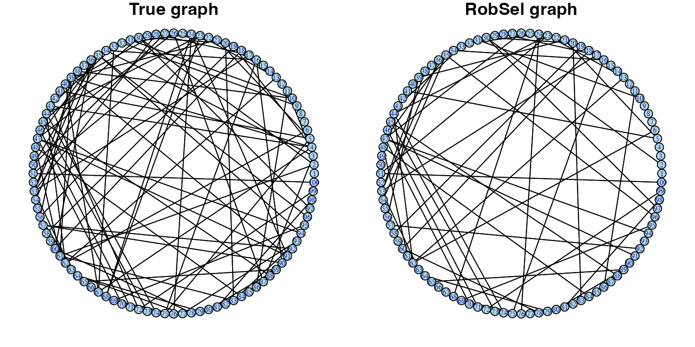

This vignette illustrate the basic usage of the robsel
package to estimate of the regularization parameter for Graphical
Lasso.
Data
First, we create a Erdős–Rényi graph and the corresponding precision
matrix using igraph package.
#ER_graph
d=100
prob=0.02
set.seed(1)
ER_graph = sample_gnp(n=d, p=prob, directed = FALSE, loops = F)
adj_matrix_ER = as_adjacency_matrix(ER_graph, sparse=F)
#Edge weights
edge_weights = matrix(runif(d*d, min=0.5, max=1), ncol=d)
edge_sign = matrix(sample(c(-1,1), size=d*d, replace=T), ncol=d)
Omega = edge_weights * edge_sign
Omega = Omega * as_adjacency_matrix(ER_graph, sparse=F)
Omega_0 = Omega
#Positive Definite procedure
off_sum = rowSums(abs(Omega_0)) * 1.5
off_sum[off_sum==0] = 1
off_sum = matrix(rep(off_sum, d), ncol=d)
Omega = Omega_0/off_sum
Omega = (Omega + t(Omega))/2
set.seed(1)
diag(Omega) = runif(d, min=1, max=1.5)
Sigma = solve(Omega)Then, we generate data with sample size \(n=3200\) using mvtnorm
package
sim.data <- rmvnorm(n=3200, mean=rep(0,d), sigma=Sigma)Using robsel functions
Estimate of the regularization parameter for Graphical Lasso
The function robsel estimates \(\lambda\), a regularization parameter for
Graphical Lasso at a prespecified confidence level \(\alpha\).
Graphical Lasso algorithm with \(\lambda\) from Robust Selection
The function robsel.glasso returns estimates a sparse
inverse covariance matrix using Graphical Lasso with regularization
parameter estimated from Robust Selection
A <- robsel.glasso(sim.data, alpha=0.05)
A
#> $alpha
#> [1] 0.05
#>
#> $lambda
#> [1] 0.08197351
#>
#> $Sigma
#> $Sigma[[1]]
#> [,1] [,2] [,3] [,4] [,5] [,6]
#> [1,] 0.9666318 0.000000e+00 0.0000000 0.0000000 0.000000e+00 0.000000e+00
....Using robsel with multiple prespecified significant
levels
We can use multiple \(\alpha\) simultaneously with Robust Selection
alphas <- c(0.1, 0.5, 0.9)
lambdas <- robsel(sim.data, alphas)
lambdas
#> [1] 0.07794519 0.06589061 0.05857804
robsel.fits <- robsel.glasso(sim.data, alphas)
robsel.fits
#> $alpha
#> [1] 0.1 0.5 0.9
#>
#> $lambda
#> [1] 0.07886263 0.06476238 0.05835318
#>
#> $Sigma
#> $Sigma[[1]]
#> [,1] [,2] [,3] [,4] [,5] [,6]
#> [1,] 0.9635209 0.000000e+00 0.0000000 0.0000000 0.000000e+00 0.000000e+00
....
length(robsel.fits$Omega)
#> [1] 3The list of estimated graphs contains 3 elements corresponding to 3 different significant levels \(\alpha\).
Visualizing Graphical Lasso estimated graph tuned by
robsel
# Graph plot
#True Graph
g <- make_empty_graph(n = d, directed = F) %>%
add_edges(c(t(which(adj_matrix_ER!=0,arr.ind = T)))) %>%
set_edge_attr("color", value = "black") %>%
set_edge_attr("curved", value = 0)
# RobSel Graph
robsel.fit <- robsel.glasso(sim.data, alpha=0.05, penalize.diagonal=F)
robsel.graph.1 <- robsel.fit$Omega[[1]]
diag(robsel.graph.1) <- 0
robsel_true_index <- which((robsel.graph.1!=0 & adj_matrix_ER!=0),arr.ind = T)
robsel_false_index <- which((robsel.graph.1!=0 & adj_matrix_ER==0),arr.ind = T)
g.robsel.1 <- make_empty_graph(n = d, directed = F) %>%
add_edges(c(t(robsel_false_index)), color="red", curved=0) %>%
add_edges(c(t(robsel_true_index)), color="black", curved=0)
# Plots
par(mfrow=c(1,2), mar = c(1, 1, 1, 1))
plot(g, layout=layout.circle, vertex.color = "lightblue", vertex.label.cex=0.5, vertex.size=6, main="True graph")
plot(g.robsel.1, layout=layout.circle, vertex.color = "lightblue", vertex.label.cex=0.5, vertex.size=6, main="RobSel graph")
We can see with small significant level \(\alpha = 0.05\), estimated graph from
robsel recovers many correct true edges and does not
contain any false edge.